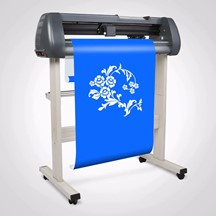

A plotter nyomtatók csak egyszínű fekete nyomtatásra alkalmasak. Speciális fajtájuk a vágóplotterek – amikkel, mint a nevük is mutatja – nyomtatni nem, csak kivágni lehet a grafikai alakzatokat (Pl.: autó, kirakat feliratozásnál). Sok esetben a nagyméretű nyomtatásra alkalmas tintasugaras nyomtatókat is plotternek nevezik. Szakmai körökben azonban egyre elterjedtebb az LFP (Large Format Printer), azaz nagyformátumú nyomtató kifejezés, amit a Canon vezetett be. A Canon nagyformátumú nyomtatói két csoportot céloznak meg. Ez alapján az LFP-k is két csoportba sorolhatók:
Alapvető különbség a két nyomtató típus között a tintapatronok számában van. A tervezési célra szánt LFP-k 6 tintapatronnal (ezek közül 3 fekete), míg a grafikai célra szánt LFP-k akár 12 tintapatronnal is dolgoznak.
Vágóplotter